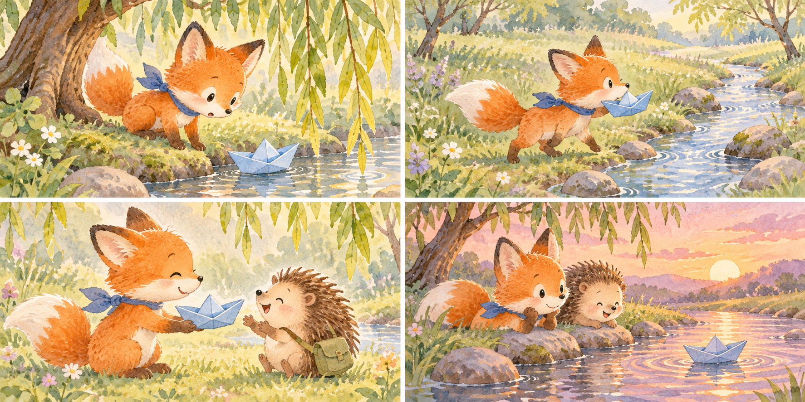

成品示例 · 绘本第 1 页
成品示例 · 绘本第 1 页和孩子一起做一本绘本
孩子出主意，你来打字，AI 帮忙写和画。做完是一本 4 页的小书。
🛡️
先说好三件事：账号和手机在家长手里；不上传孩子的照片和声音，主角用画出来的；AI 写的、画的，都由孩子说了算。
本站原创示例 · AI 生成插画
试做：小狐狸和蓝纸船
我们先写了一个虚构故事，再用内置 AI 图像生成工具一次生成一张四格插画；下面的四个画面，是本页用同一张图分区排版展示的。
- 01 · 发现柳树下，小狐狸发现了一只蓝色的纸船。
- 02 · 寻找他沿着小溪，一路寻找纸船的主人。
- 03 · 相遇原来，纸船是小刺猬不小心弄丢的。
- 04 · 分享夕阳下，他们一起看着纸船顺水飘远。
查看一次生成的完整四格图

来源：本站原创虚构故事与内置 AI 图像生成工具；故事文字由本站编写、网页排版。四格来自同一张图，尚未导出或装订成册，也不代表本教程在所有外部工具中完整走通。
为什么值得在家做
孩子是作者，不是观众
故事是孩子编的，AI 只帮忙把它写顺、画出来。孩子学到的是怎么指挥 AI，而不是看 AI 表演。
在家一起尝试
家长可陪孩子用 AI 工具尝试，工具额度与费用以当期说明为准。
做一次，用很久
打印出来就是孩子自己的书。下次换个主角、换个地方，又是一本。
要花多少
| AI 写作与生图 | 以工具的额度及费用说明为准 |
| 打印 | 按实际打印价格计算 |
| 时间 | 视个人和工具情况而定 |
继续探索：做成一套
- 固定主角。用绘本助手先定好主角的长相，以后每本都让它照着画。
- 一个月一本。把孩子这个月经历的事编进去：第一次游泳、换了新同桌。
- 装订成册。攒够 4 本，找打印店做成一本厚书，当生日礼物。
注意
不传照片和声音
不要用孩子的照片生成形象，不要录孩子的声音做配音。主角用文字描述画出来就够了。
AI 也会画错
多手指、字乱码都很常见。让孩子挑出来，再说一句「重新画，不要有字」。
别做成长时间看屏幕
编故事和讲故事可以离开手机做，只有打字和画图时再拿手机。
页面里的示意图不是真实软件界面。示例图片由 AI 生成。